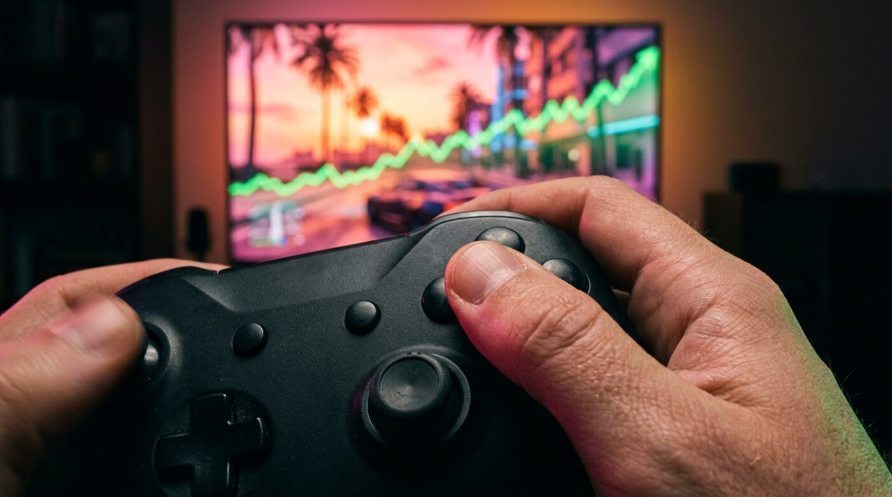
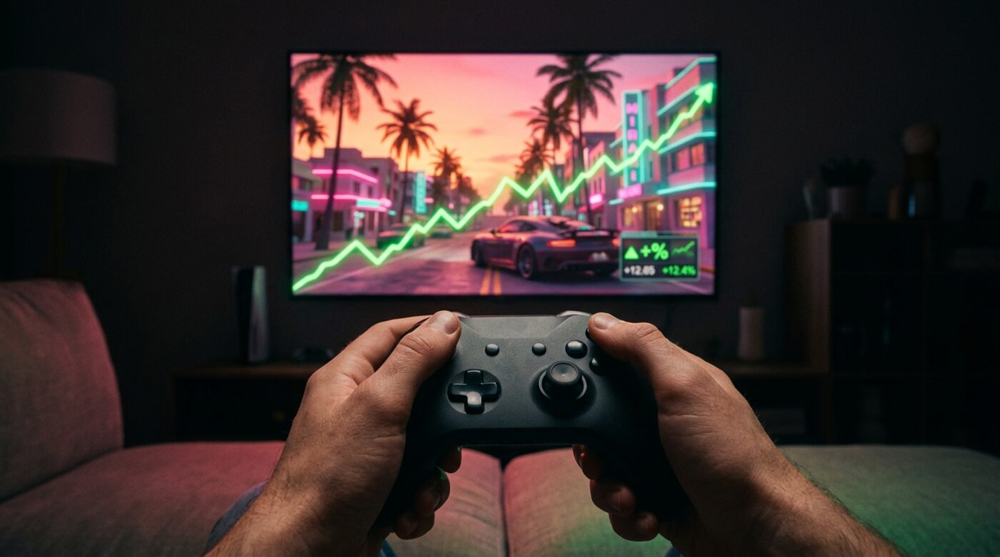
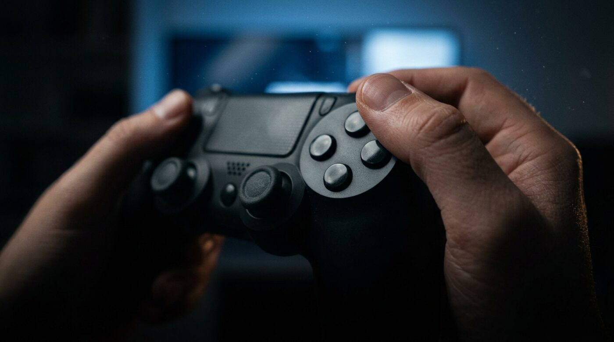
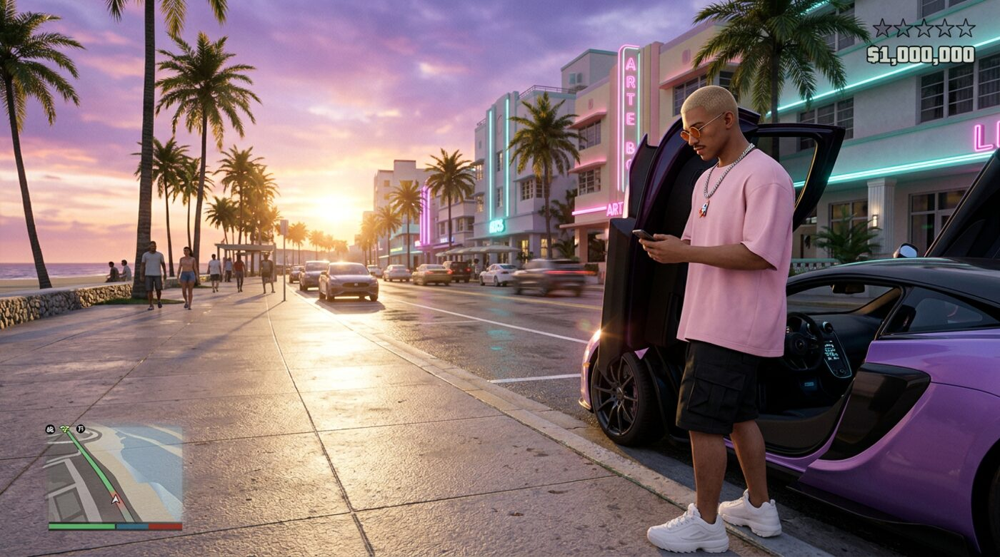
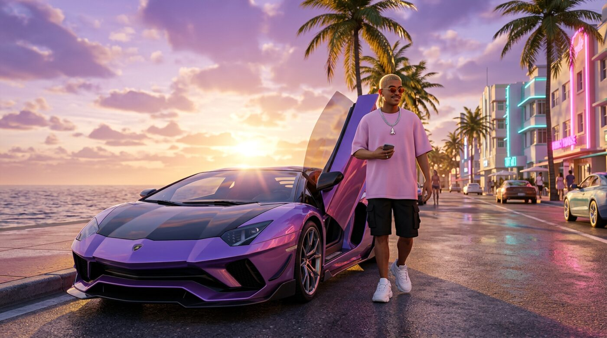
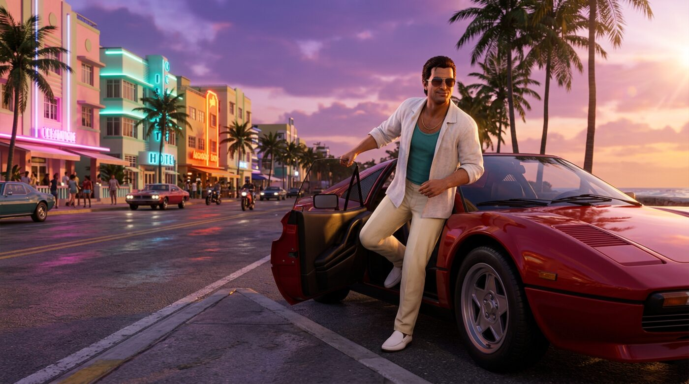

Два ролика по 8 секунд — кадры готовы, видео ждёт твоего «да»
Первые кадры нарисовали бесплатно. Ниже по каждому ролику: что увидит зритель, как это работает на пост и сам текст задания для Gemini. Видео пока не запускали, бережём бесплатные ролики дня.
Ролик 1 · «Палец и геймпад»

Первый кадр БЕРЁМ — большой палец давит кнопку. За ним телевизор: игра в духе GTA, поверх растёт зелёный биржевой график. Свет экрана на руках, вечер.
Приглушённая музыка игры и весёлый нарастающий тон → частые щелчки кнопки → треск стекла → низкий гул вниз → тишина. Без голоса.
Без искр, частиц и голограмм — именно это раньше выглядело дёшево. Без логотипов и надписей.
Другие варианты кадра

Вариант A: телевизор виден лучше, но руки мелкие — ты просил крупно.

Ранний вариант без графика на экране — до твоего уточнения.
Текст задания для Gemini (по-английски — так модель понимает лучше)
Use the supplied image as the opening frame. One continuous shot, no scene cuts, 8 seconds, horizontal 16:9. Keep the room, the hands, the controller and the TV exactly as they are in the image. [0-3s] On the TV the green price chart keeps climbing smoothly over the game. The thumb hammers the top button fast, four or five hard taps in a row; the controller jolts slightly in his hands with every tap. [3-4s] On the last, hardest press the green line on the TV turns blood red and snaps sharply downward. [4-7s] The glowing red line punches through the bottom edge of the TV screen as if breaking out of it - the screen glass cracks around the exit point - and the line keeps plunging straight down the wall and off the bottom of the frame. The camera tilts down slightly, following it. Red light floods the room, the controller and the hands. [7-8s] Hold: the TV screen is cracked and glowing red, the thumb frozen on the button. Style: premium film look, photoreal, natural skin texture, real plastic, 35mm film grain, high contrast. Sound design: muffled game music and a cheerful rising synth tone at the start, rapid loud plastic button clicks, then a sharp glass crack at 4 seconds and a deep descending bass tone that sinks with the red line, ending in sudden silence. No dialogue. Do not add sparks, particles, explosions, holograms, glitches or floating numbers. No text, no logos, no brand marks.
Ролик 2 · «Пузырь ИИ в духе GTA VI»

Первый кадр БЕРЁМ — как настоящий кадр из игры: закат, пальмы, неон, спорткар, в углах мини-карта, звёзды розыска и «$1 000 000». Герой свой: молодой крипто-трейдер в розовой футболке. Машина выдумана, без значков.
Ретро-синтвейв из машины, пляж, чайки, хлопок двери → громкое мокрое «хлоп» → короткий игровой звук «провал». Без голоса.
Без героев настоящей GTA VI, без логотипов игры и издателя, без значков машин. Надписи только «ИИ» и деньги.
Другие варианты кадра

Без игрового интерфейса, и на машине виден настоящий значок марки — не берём.

Первый вариант: герой вышел слишком похожим на детектива из «Полиции Майами» — чужой образ, переодели.
Текст задания для Gemini
Use the supplied image as the opening frame. One continuous shot, no scene cuts, 8 seconds, horizontal 16:9. Keep the look of a gameplay capture from a next-generation open-world video game, keep the character exactly as in the image, keep the HUD in the corners. [0-2s] The character slips his phone into his pocket, pushes the scissor door shut and leans back against the car, chewing gum, smug. The third-person game camera slowly drifts closer to a medium shot. [2-6s] He blows a bubble of bright pink bubble gum. It swells bigger and bigger - glossy, translucent, reflecting the neon and the sunset - until it is bigger than his head. Two big white Cyrillic letters "ИИ" are printed on the bubble and stretch as it grows. [6-7s] The bubble bursts with a loud pop and splatters pink gum all over his sunglasses and face. At the same moment the money counter in the top-right corner rapidly drops from "$1,000,000" to "$0". [7-8s] He freezes, deadpan, gum hanging from his sunglasses. Hold. Sound design: a 1980s-style synthwave track from the car radio, beach and street ambience, seagulls, the car door thud, a big wet comic pop at 6 seconds followed by a short video-game "fail" sound. No dialogue. Do not show any real video-game characters, game titles, publisher logos or car emblems. The only words in the video are "ИИ" on the bubble and the money counter. Exactly one main character.
Как мы пишем задания — по советам Google и авторов
- Сначала кадр, потом движение. Вид задаёт картинка, задание описывает только то, что двигается.
- Одна сцена без склеек — пишем прямо, иначе Gemini сам режет ролик на куски.
- Расписано по секундам: что происходит с 0 по 3-ю, с 3-й по 4-ю и так далее.
- Одно действие плюс развязка — не три сюжета в 8 секундах.
- Звук описан отдельно: что щёлкает, что гудит, где тишина.
- Запреты прямо в тексте: без искр, логотипов, голоса.
Что может пойти не так
- Надпись «ИИ» по-русски модель может нарисовать криво. Тогда переделка с «AI» — это и есть одна запасная попытка.
- Наш бот пока ходит в обычный чат Gemini, а не на страницу «Видео», и сам дописывает «без надписей». Для второго ролика это мешает. Записку строителю бота уже написали — как научить его работать со страницей «Видео».
- Лимит. Google больше не называет число роликов в день: общий лимит обновляется каждые 5 часов. Делаем 2 ролика и максимум 1 переделку. Если Gemini покажет «лимит» или «я не робот» — сразу стоп.
От тебя
- Скажи «да» или поправь кадры и сюжеты — 2 мин.
- После «да» делаем оба ролика в твоём Gemini — около 10 минут, тебе ничего жать не нужно.
Собрано 21.11.2026 · кадры нарисованы бесплатно · видео не запускали.